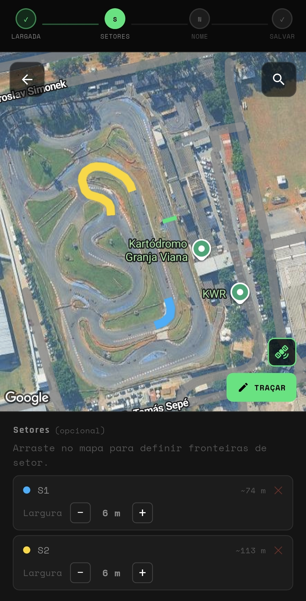
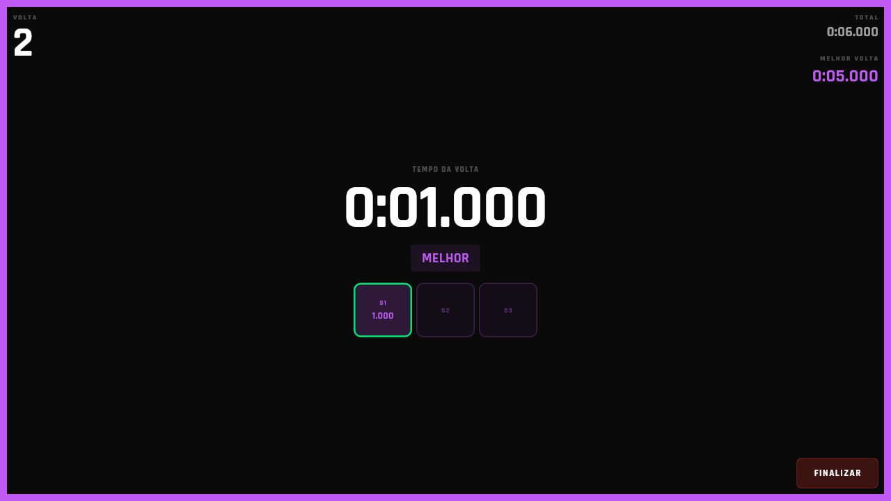

Lapzy transforma seu smartphone em uma ferramenta de telemetria. Cronometre voltas, acompanhe setores e evolua a cada corrida.


Sem referência de tempo, você só sabe que foi mais rápido quando já passou. E aí já é tarde.
Abra o app, configure seu traçado uma vez, e comece a correr. O Lapzy faz o resto — em tempo real, no seu celular.
Voltas, setores, delta — tudo no display enquanto você pilota.
Histórico de voltas, melhor tempo e consistência por sessão.
Detecção de linha de largada por GPS. Sem hardwares extras.
Abra o mapa, arraste a linha de largada e defina seus setores. Funciona em qualquer kartódromo do Brasil.
Em modo paisagem, você vê o tempo da volta em tempo real — e sabe na hora se está melhor ou pior que o seu recorde.
Depois da sessão, veja tudo: melhor volta, consistência por setor, evolução ao longo do dia. Em breve.
Baixe agora. Configure em 1 minuto. Vá para a pista.